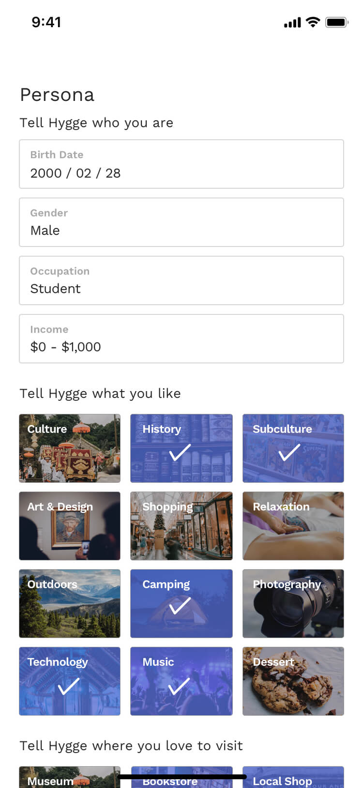
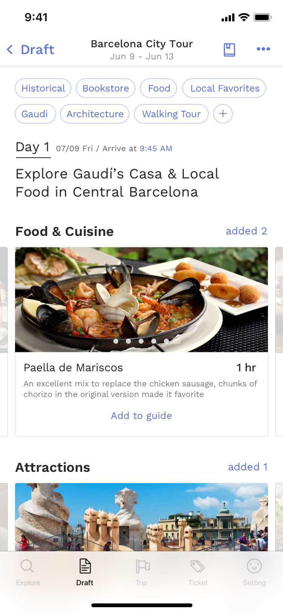
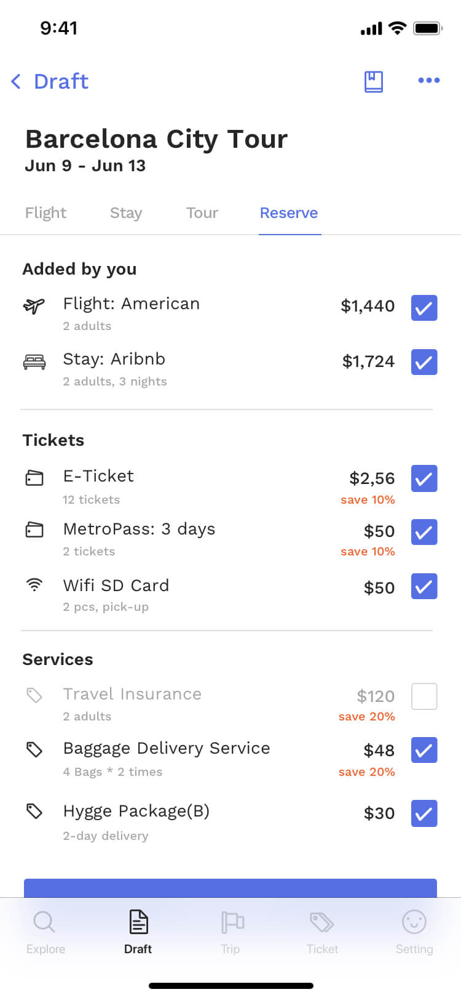
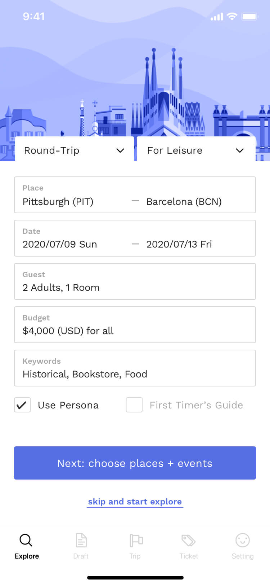
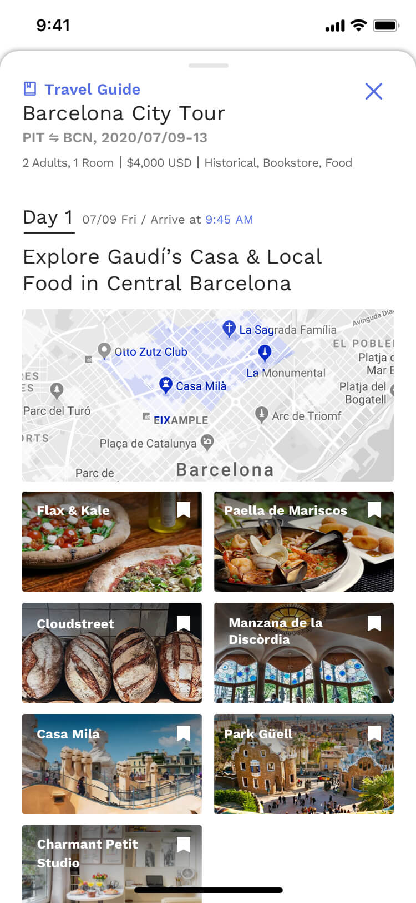
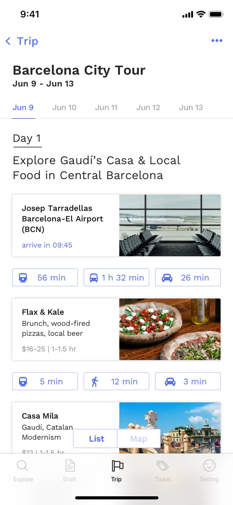

Summary
Issue
Travel planners cannot tailor a trip effectively and enjoyable, need to spend 53 days and use 28 apps/sites to plan/book, and experience anxiety.
Barriers
Information overload, decision fatigue, organize and integrate complex data manually.
Solution
An all-in-one app that integrates all trip-planner resources, provides personalized recommendations, and generated trip schedule.
Success Metrics
TraveTravel planners can personalize a trip and receive trip schedule in 10 minutes.
Process
● Discover
Inspiration, User Interviews, User Journey Map, Data Research
● Define
Problem Focus, Product Requirements
● Develop
Service Design, Wireframe, User Flow, User Testing
● Deliver
Product Design, Prototype, Technical Implemetation
● Ship Designs
Planning a trip can be a marathon in a labyrinth, you get lost in explosive information and decisions, and spend a long time to reach a destination(best options). Without a guide and helps, trip-planning can become an endless trial and error loop; to reach right ends, you need to use and integrate multiple methods, mediums, and information.
A study about vacations and pre-trip happiness established that "planning or anticipating your trip can make you happier than actually taking it". However, people also suffer from pre-trip anxiety due to the uncertainty and complexity of the trip planning.
I interviewed 5 people and summarize the key points and overlay experience through making journey mapping.
I realized that People spend much time researching across multiple platforms, sites, and apps. They not only need to digest a huge volume of the information but also need to try many ways to narrow down the information and to access to ideal options. Eventually, countless decision making causes fatigue and anxiety.
To understand the user behavior of a broad audience, and solve the questions I had on recommendation and itinerary organization, I did the domain research to help me move forward through quantified data.
53 days + 28 websitestravelers spent an average of 53 days visiting 28 different. websites over a period of 76 online sessions
*
Social MediaMore than 50% of travelers checking social media for travel tips and inspiration.
*
57% of U.S. travelerswant the tailored information based on
personal preferences. *
69% of leisure travelersfeel anxiety for not finding the best price or making the best decision.
*
Near memobile searches have grown over 200% with "events, attractions, food, buy".
*
Priceis the most important factor in booking travel for smartphone users.
*
Jeroen Nawijn, the lead author of the
[study] which mentioned above, suggested that people can
maximize the pre-trip happiness by fully indulging in the excitement of planning such as talking to people about plans, bragging about them on social media, and reveling in both the anticipation and FOMO you're causing.
*
Takeaway from User Interview & Data Research -
People experience information overload, decision fatigue, and high digital footprints, the whole trip-planning process is complex and time-consuming. People want to get right options directly and a better tool to help them organize a trip.
###
From the interviews and domain research, I confirmed that users want to use fewer efforts and time to customize their trip based on the interests and needs; therefore, I want to develop a trip planner app that can help the user customize a trip within 10 minutes, to fulfill the goal, it should be able to recommend options precisely and organize itinerary perfectly.
| Problem |
|
Solution |
| Require high digital footprints, lots of time on finding trip planning services. |
→ |
#1 All-in-one platform, integrate all resources like flight, stay, attraction, shopping, ticket, restaurant... |
| Use keywords to narrow down research result back and forth. Decision fatigue, comparing multiple options manually. |
→ |
#2 Provide more filters on search. Recommend less than 10 options that highly match users' interests. |
| Arrange schedule and cross-analyze information manually. |
→ |
#3 Organize itinerary automatically by day and location. |
| Experience pre-trip anxiety due to the complex process. |
→ |
#4 Enable user to share trips through digital and tangible mediums. |
Steps:
- Build Persona: Users build "Persona" to digitize their preferences and interests when register, this value will be used to match options.
- Input Requirements: Hygge provides multiple filters so users can target options easily. (e.g. budget, flight, hotel, attraction, trip purpose...)
- Select Options: Hygge provides less than 10 options for each section, based on the match score. Users can also see more options immediately.
- Get Itinerary: Once users confirm selections, Hygge can book all services and generate online or printed itinerary.
The change of the user journey map, without and with the Hygge:








How does Hygge build a database?
Hygge scrapes data from numerous sites such as Google, TripAdvisor, Wikipedia and build then build the initial database. Therefore, Hygge owns basic information such as the popular and famous sites in each city. For analysis, Hygge would identify characteristics and assign an attribute value for each trip options, the value will be used for matching a user's requirement and preferences.
How does the Persona help recommendations?
Hygge requests user to build Persona when register, therefore, Hygge can build the initial data and value for the further recommendation analysis. Hygge uses multiple data analysis methods such as euclidean distance to calculate the match number.
How does Hygge optimize recommendation?
Hygge uses machine learning to update the scoring system for both the database and the user. Sometimes people just have no idea what they like or what they want, Hygge will revise the matching value based on the user's behavior and decisions.
Feasibility and accuracy of the personalization. As the machine learning and algorithm grow mature, I think "personalization" will be the next trend for every digital service/product. Most of the products recommend options based on past data, which I think might have a limitation due to the weak links. I have doubts about this process so I choose to let the user input their interest in the first step, which is also a challenge for me - how can I use the fewer steps to get the most related data to know users' interests and preferences? - that will be the topic I want to learn more about.
Digital experience v.s tangible experience. I also think about the digital experience and physical experience, which can lead to a very different experience for users. On the age of digital, people will eventually get bored of only acquiring the online product, and convenience can take away lots of experience. I believe that happy memory and experience should be augmented in people's lives, and those abstract things should be delivered in the tangible form if possible to remind people and bring a positive impact on people's lives.
For the future improvement, I want to (1) improve the accuracy of recommendation, this might require more data research or cooperated with experienced expert. In addition, I want to (2) make the whole process more streamlined and simplified, by iterating the interface and experience design.


{kind=link}
{kind=link}
{kind=link}
{kind=link}
{kind=link}
{kind=link}